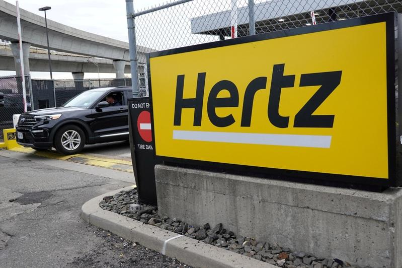

许多人在旅行租车时都有相同的经验，各种费用似乎是层层叠加，但旅游网站The Points Guy指出，其实多数费用是可以省的，以下是避免租车费用急遽增加的三种方法：
还车前加满油
为避免被租车公司收取过高的汽油费，最好的办法是在还车前将油箱加满。另一种方法是在取车时预付加满油的费用，不过多数租车公司都不会退还未用的汽油费，因此，只有预期会用掉大部分汽油时，这个选项才有利。The Points Guy建议，选择在还车前加满油，较节省开支。
自备道路收费感应器
租来的车可能会配备收费感应器，例如赫兹（Hertz）的PlatePass可以在全美的 E-Z Pass与I-Pass的非现金收费车道使用。可能的话，最好自备收费感应器或用现金支付通行费，并将租车的感应器放在置物箱里；否则为了一时便利，可能会多花冤枉钱。
如果在纽约市租车，可以注册「按里程付费」（Pay Per Trip）来支付桥梁与隧道通行费。只需在大都会运输署（MTA）网站注册租车牌照，所有过路费都可以信用卡支付。
佛罗里达州的网络公司TPG编辑总监伊文（Nick Ewen）有个SunPass Pro感应器，可在佛州与其他21个州使用；同时，E-Z Pass也是到佛州旅游的一个选项，游客通行证（Visitor Toll Pass）则适用于从奥兰多国际机场进出的旅客。
避开「25岁以下」费用
年轻的租车者可以使用多种技巧绕过昂贵的「25岁以下」费用，例如使用某些企业代码、美国汽车协会（AAA）折扣码与大学代码订车，就可避开这笔费用，省下不少钱。